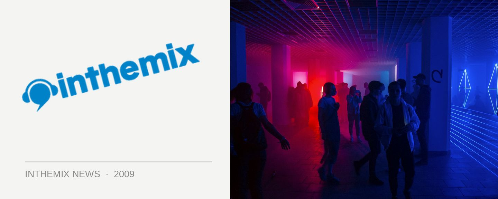

UPDATED: 16 Bit Lolitas touring for We Love Sounds
UPDATED: Contrary to dates published on the 16 Bit Lolita’s website, ITM has been informed there will be no sideshows in Perth, Sydney, Melbourne or Adelaide, with a Brisbane date TBC. Updated dates below!
16 Bit Lolitas are one of the world’s most famous (and talented) progressive house duos, and they’re definitely one of the highlights on the upcoming We Love Sounds festival in June, not to mention the debut of Winter Sound System in Melbourne.
Recently, the boys otherwise known as Aad Olieroock and Peter Kriek have been releasing some excellent material on Above & Beyond’s progressive offshoot label Anjunadeep, and they’re also coming off the back of the release of last year’s superb artist album/mix compilation hybrid Warung Brazil #001. Last year when they talked to ITM they spoke on how they’ve been bringing the once disparate worlds of techno and progressive come together in their music recently.
“Since the way that grooves sound has changed a lot over the years, we tried to integrate music with minimal/techy kind of beats. And in a way it’s the next logical step. Where minimal/tech can tend to get boring because it lacks some warmer musical moments, we tried to get the best of both worlds. We’re certainly not the only ones going down this road.”
16 Bit Lolitas tour dates:
May 31st – We Love Ministry of Sound, Perth
May 29 – Venue TBA, Canberra
Jun 6th – We Love Sounds, Sydney
Jun 7th – Winter Sound System, Melbourne
Jun 8th – We Love Sounds, Adelaide